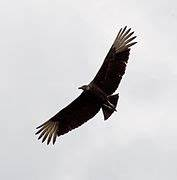

Quase todas as tardes ocorre um evento curioso na capital paraense,em plena luz do dia os céus escurecem, dezenas ou até centenas de urubus se acumulam em determinados pontos do céu,circulando,como um presságio de algo que está por vir. As suspeitas eram grandes,mas nada havia sido confirmado,até que em meados de 2020 a Universidade Federal da Paraíba acabou com as dúvidas;Belém é a cidade onde mais chove no Brasil.
Mas por que chove tanto?
A capital paraense é basicamente uma grande ilha cercada de rios e muito próxima do equador,(linha geográfica imáginaria,localizada no meio do planeta, é a área mais afetada pelos raios e calor do sol) isso faz com que muita água seja evaporada e nuvens nuvens de chuva sejam criadas.Como se já não bastasse,os famosos "rios voadores"(ventos úmidos vindos do centro da floresta amazônica) vem pela esquerda,e,somados com mais nuvens carregadas originários do oceano Atlântico,localizado logo acima do Pará,fazem desta cidade o ponto de encontro de diversas massas de água.
O que os urubus procuram?

Assustadores pra alguns,mas apenas espertas criaturas para outros,essas aves sobrevoam em grandes altitudes e em círculos para avistarem melhor onde pode haver alimento,é aí onde eles começam a "prever o tempo",pois a chuva ocorre justamente quando as águas evaporam,o ar quente sobe,e o ar frio desce.Então,os urubus,sem fazer quase esforço nenhum batendo as asas aproveitam o impulso dos ventos quentes para ficar bem em cima com uma visão privilegiada.
A crença popular é verdadeira?
O clima regional é exótico o suficiente a ponto de não existirem estações bem definidas,apenas o inverno,quando as fortes gotas caem por dias sem parar,e o verão amazônico,onde por volta das 16h da tarde vem o toró,termo originário do tupi,o qual significa "chuva como um jato de água".Mas quem definiu um horário pra chuva acontecer?isso é um mito,um fato?ou as duas coisas?
Mais do que fenônmeno meteorológico,chuva é cultura.

"Éden perdido" era o termo usado por volta de 1850 por estrangeiros para descrever Belém,os quais,vinham a cidade por diversoso motivos, dentre eles se encontravam Henry Bates e Alfred Wallace,pesquisadores que coletaram várias espécies e foram cruciais para a teoria da evolução. Nesse péríodo os viajantes viviam escrevendo e relatando muito sobre a cidade,incluindo sobre o famoso toró.Eles percebiam e tratavam aquilo mais do que simples chuvas recorrentes,toda a dinâmica da cidade girava em torno disso,frases usadas para marcar eventos,geralmente no final da tarde,como "tu vem antes ou depois da chuva?" só comprovam como diversos ocorridos dependiam e ainda dependem de quando a chuva terminava e/ou acabava,popularizando as 16:00 horas como o horário em que as nuvens pretas cercam a capital,e,fazendo essas mesmas nuvens serem mais do que manutenção do habitat,elas são um símbolo,responsável por moldar toda a cultura de uma região.